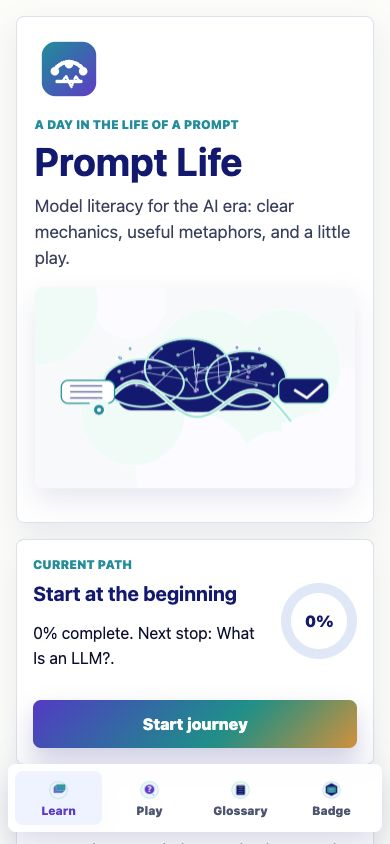
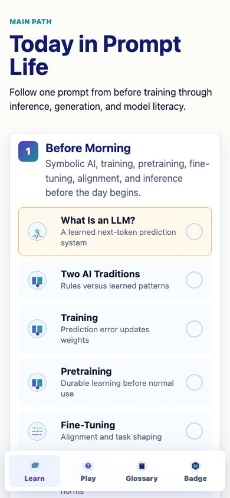
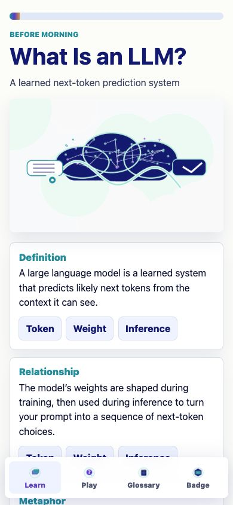
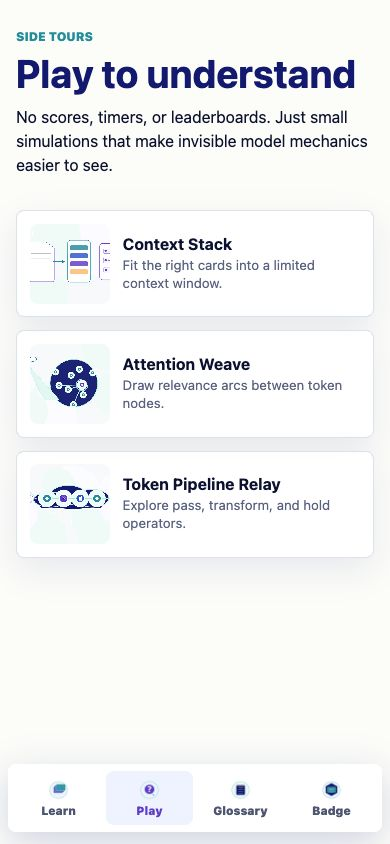
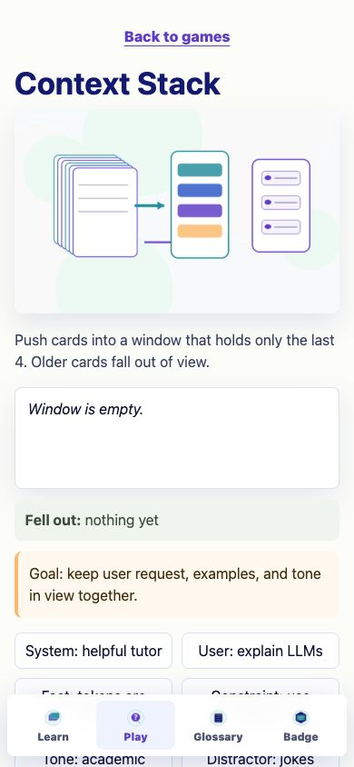
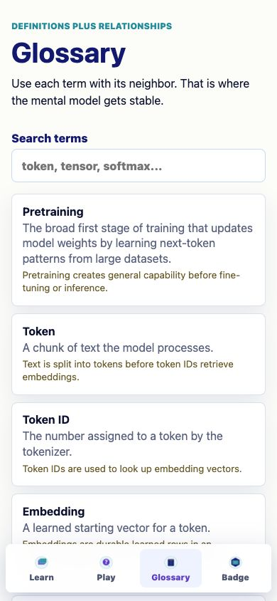
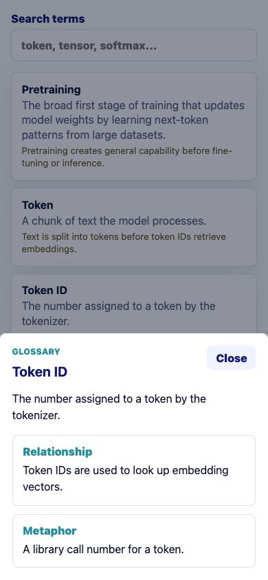
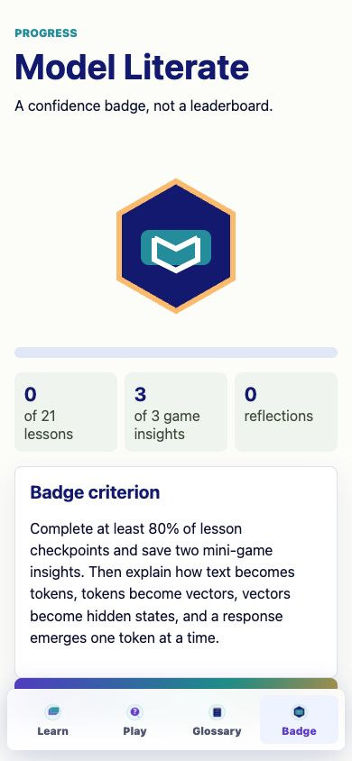

Prompt Life MVP Summary - May 31, 2026
Prompt Life
Mobile-first MVP for teaching how large language models work from pretraining to response. The product tone is warm, precise, and model-literate: reduce mystery without hype or fear.
Expanded the seed into a polished Vite + React + TypeScript app with 21 lessons, 24 glossary terms, saved progress, reflections, stronger mini-games, improved glossary drawer behavior, and mobile-first UI polish.
Ran npm install, npm run typecheck, and npm run build. All passed. Mobile browser QA at 390 x 844 found no console errors.
Files Changed
src/main.tsx: app state, lesson flow, interactions, games, glossary drawer, badge screen.src/data/content.ts: 21-lesson A-to-Z path plus the required glossary coverage.src/styles/global.css: mobile layout, focus states, reduced motion, cards, controls, games.src/styles/promptlife.tokens.css: token cleanup for current visual system.README.md: exact local development and build instructions.docs/PRODUCT_BLUEPRINT.md: learning architecture and v0.2 direction.
How To Run
From the project folder, run npm install, then npm run dev, then open http://localhost:5173/. For verification, run npm run typecheck and npm run build.
Done
- Navigation: Home, Learn, Play, Glossary, Badge.
- Lesson pattern: definition, relationship, metaphor, tiny interaction, checkpoint, reflection.
- LocalStorage progress for lessons, game insights, reflections, and location.
- Mini-games: Context Stack, Attention Weave, Token Pipeline Relay.
- Badge unlock requires lesson checkpoint progress plus mini-game insights.
- Core teaching distinctions kept explicit: training vs inference, embeddings vs hidden states, attention vs human attention, logits to softmax to sampling, context windows vs memory, diffusion vs autoregressive text.
Next Three v0.2 Improvements
- Add short instructor mode with discussion prompts and downloadable classroom handouts.
- Add a guided "trace one prompt" animation that links tokens, hidden states, logits, and sampled output across one continuous run.
- Add lightweight accessibility QA with automated checks and keyboard-only walkthrough scripts.
Mobile Screenshots







